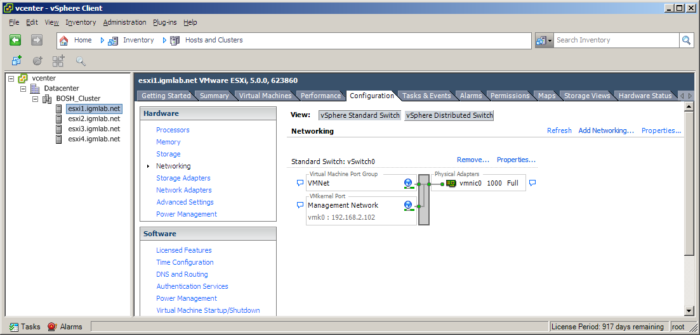
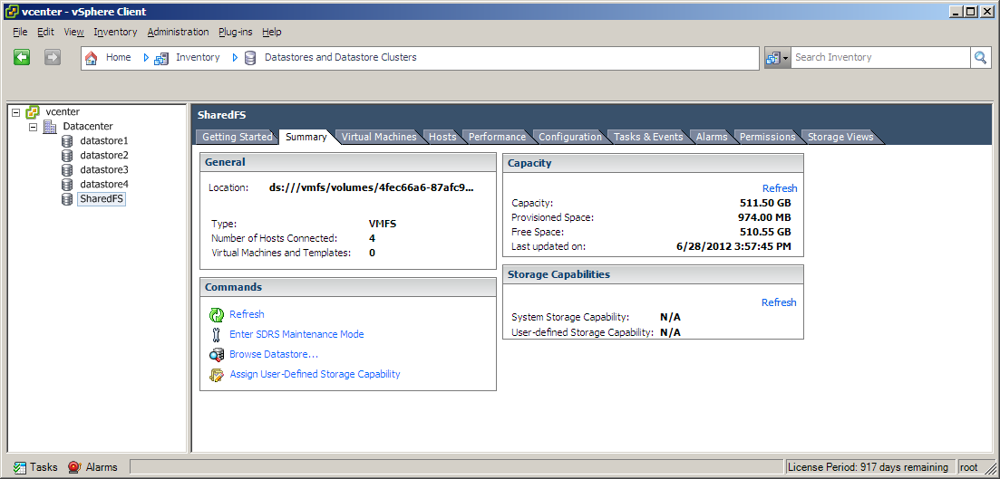
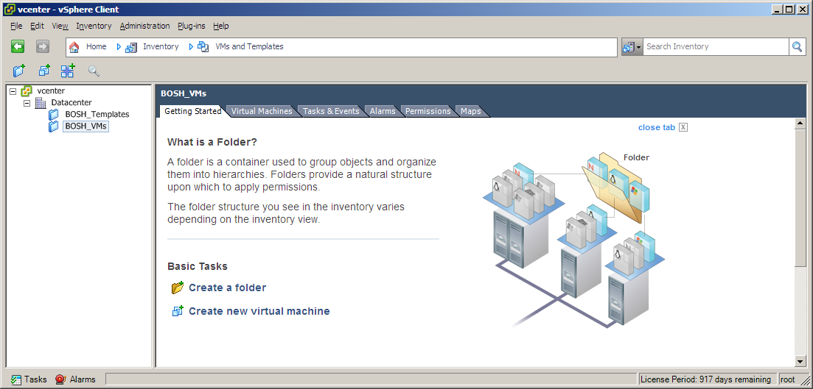
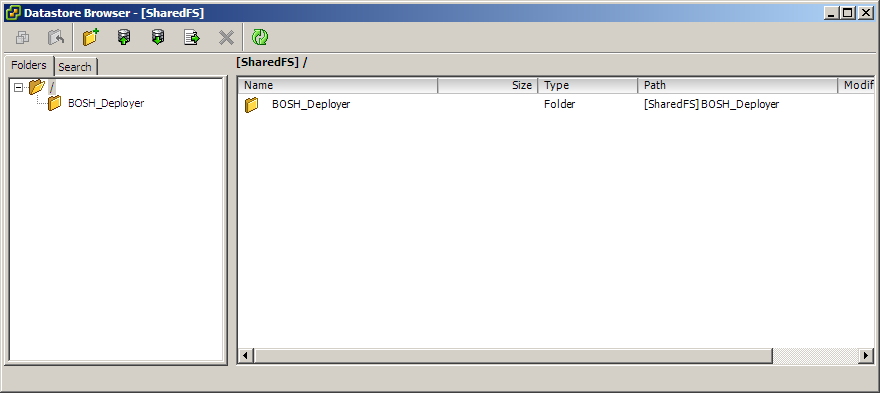
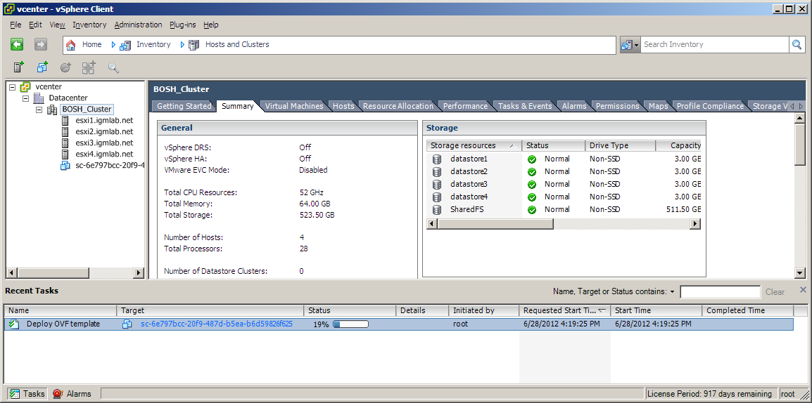
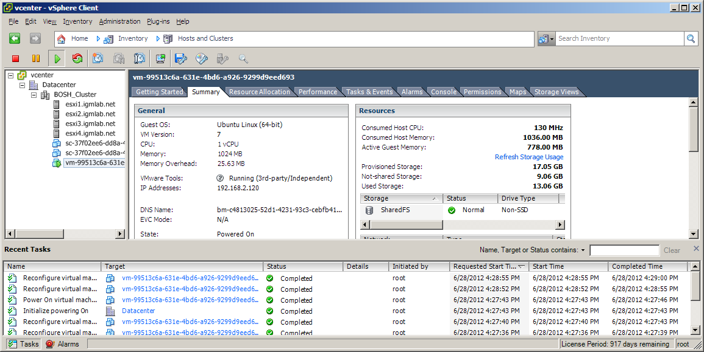

BOSH on vSphere (micro Bosh)
Recently I spent some time playing with BOSH which is a tool for release engineering, deployment and lifecycle management of large scale distributed services. It is used to manage VMs in AWS and vSphere. The vSphere option seemed to be interesting to me and the idea of having private Cloud Foundry PaaS running locally on private infrastructure was exciting. The BOSH is under heavy development and it’s sometimes difficult to make things work easily even if following various tutorials and blogs and I’m very thankful to the authors.
vSphere Setup
As an infrastructure I created a cluster of 4 hosts ESXi version 5u1 (esxi1, esxi2, esxi3, esxi4) registered in igmlab.net domain (i.e. esxi1.igmlab.net). All of the hosts were powered by four core CPU wih 16GB of RAM and iSCSI shared storage (IET software based) of 512GB. The internal network had following characteristics: IP range: 192.168.2.0/24, GW/DNS: 192.168.2.107. For VMware vCenter Server SUSE based VM appliance was used (verion 5.0.0).
Proper network configuration is crucial for correct deployment. Bosh VMs run as guests in ESXi hosts and they access those hosts directly so both the hosts and guests have to share the same network. This is also the case for vCenter Server.




Micro Bosh
To deploy Bosh you need Bosh. It’s kind of like to get a compiler you need to compile one first. Luckily there’s a special one called “micro Bosh” and it can be installed by Bosh CLI addon called Bosh Deployer. So first things first, let’s start with Bosh CLI. The current version at the time of writing is 0.9.14. Ruby people should not have any problems installing it via gem install bosh_cli. More detailed instructions are here. The next step is to install Bosh Deployer. For trouble-less installation Ubuntu 10.04.4 LTS Server is suggested. The steps:
$ gem install bosh_cli
$ git clone https://github.com/cloudfoundry/bosh.git
$ cd bosh/deployer
$ bundle install
$ rake install
$ rbenv rehash
$ bosh
usage: bosh [--verbose] [--config|-c <FILE>] [--cache-dir <DIR]
[--force] [--no-color] [--skip-director-checks] [--quiet]
[--non-interactive]
command [<args>]
...
Micro
micro deployment [<name>] Choose micro deployment to work with
micro status Display micro BOSH deployment status
micro deployments Show the list of deployments
micro deploy <stemcell> Deploy a micro BOSH instance to the currently
selected deployment
--update update existing instance
micro delete Delete micro BOSH instance (including
persistent disk)
micro agent <args> Send agent messages
micro apply <spec> Apply spec
Next we need micro bosh deployment manifest. In the manifest the deployment configuration is stored. The defaults for vSphere can be found in the repository and the manifest for micro Bosh deployment looks like this:
We need to create deployments directory to store our deployment manifest files.
$ mkdir -p ~/deployments/micro $ cd ~/deployments/micro $ vim micro_bosh.yml $ ... copy and update the content of bosh_micro.yml file
Micro Bosh Stemcell is a VM template that will be used for our deployment. Deployment manifests define the details that are configured in the VM so that all the network configuration is set properly. It also contains details about the vSphere setup, vCenter connection parameters, resource parameters for VM etc. To get a full list of available Bosh stemcells run:
$ bosh public stemcells +---------------------------------+-------------------------------------------------------+ | Name | Url | +---------------------------------+-------------------------------------------------------+ | bosh-stemcell-0.3.0.tgz | https://blob.cfblob.com/rest/objects/4e4e78bca41e1... | | bosh-stemcell-0.4.4.tgz | https://blob.cfblob.com/rest/objects/4e4e78bca51e1... | | bosh-stemcell-0.4.7.tgz | https://blob.cfblob.com/rest/objects/4e4e78bca21e1... | | bosh-stemcell-0.5.2.tgz | https://blob.cfblob.com/rest/objects/4e4e78bca31e1... | | bosh-stemcell-aws-0.5.1.tgz | https://blob.cfblob.com/rest/objects/4e4e78bca21e1... | | bosh-stemcell-vsphere-0.6.0.tgz | https://blob.cfblob.com/rest/objects/4e4e78bca41e1... | | bosh-stemcell-vsphere-0.6.1.tgz | https://blob.cfblob.com/rest/objects/4e4e78bca31e1... | | micro-bosh-stemcell-0.1.0.tgz | https://blob.cfblob.com/rest/objects/4e4e78bca51e1... | +---------------------------------+-------------------------------------------------------+ To download use 'bosh download public stemcell'.For full url use --full.
At this moment we are interested in micro stemcell (micro-bosh-stemcell-0.1.0.tgz) and we need to download it:
$ mkdir -p ~/stemcells $ cd ~/stemcells $ bosh download public stemcell micro-bosh-stemcell-0.1.0.tgz
As soon as we have required stemcell and manifest we can start the deployment procedure:
$ cd ~/deployments $ bosh micro deployment micro $ bosh micro deploy ~/stemcells/micro-bosh-stemcell-0.1.0.tgz Deploying new micro BOSH instance `micro/micro_bosh.yml' to `micro' (type 'yes' to continue): yes Verifying stemcell... File exists and readable OK Using cached manifest... Stemcell properties OK Stemcell info ------------- Name: bosh-stemcell Version: 0.5.1 Deploy Micro BOSH unpacking stemcell (00:00:26) uploading stemcell (00:06:21) creating VM from sc-d8ed6782-ff50-4e1d-ac47-519b225ba85a (00:09:02) waiting for the agent (00:01:34) create disk (00:00:00) mount disk (00:00:42) stopping agent services (00:00:00) applying micro BOSH spec (00:01:12) starting agent services (00:00:00) waiting for the director (00:00:49) Done 11/11 00:20:41 Deployed `micro/micro_bosh.yml' to `micro', took 00:20:41 to complete
Entire process takes several minutes (~20 minutes in my case):

Now we can target the micro bosh and login with default admin/admin:

$ bosh target 192.168.2.120:25555 $ bosh status Updating director data... done Target micro (http://192.168.2.120:25555) Ver: 0.4 (00000000) UUID a5d6347d-3b66-465f-ae06-2444db70dce3 User admin Deployment not set
You should also be able to ssh to the micro Bosh:
$ ssh root@192.168.2.120 root@192.168.2.120's password: vmware
The password ‘vmware’ is what we provided in our manifest in env:bosh:password. You can also generate hash for custom password:
$ mkpasswd -m sha-512
and use it instead before deploying micro Bosh. And if you think this is all you wanted to do you can delete the deployment:
$ bosh micro delete